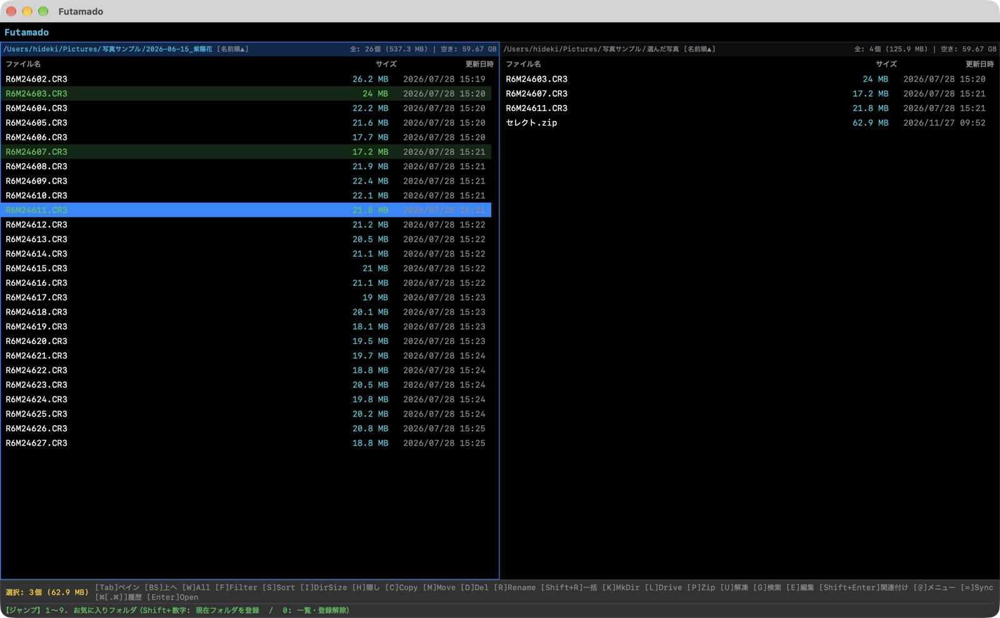
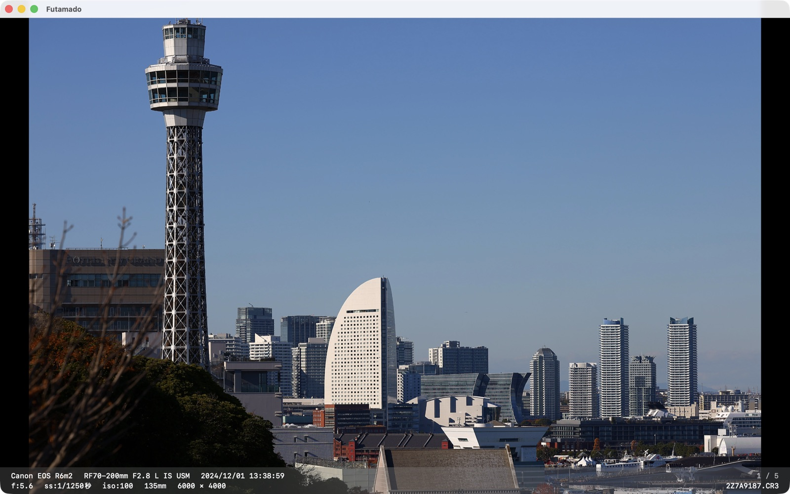
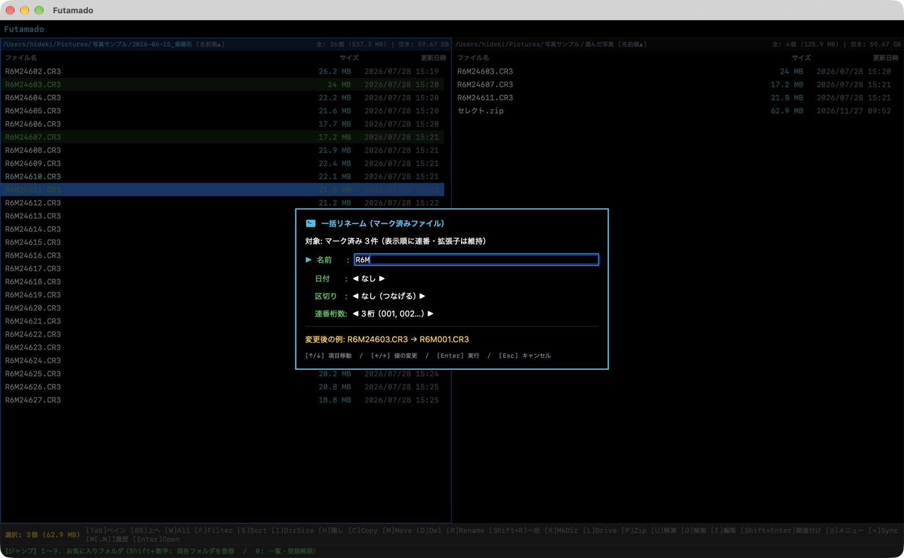
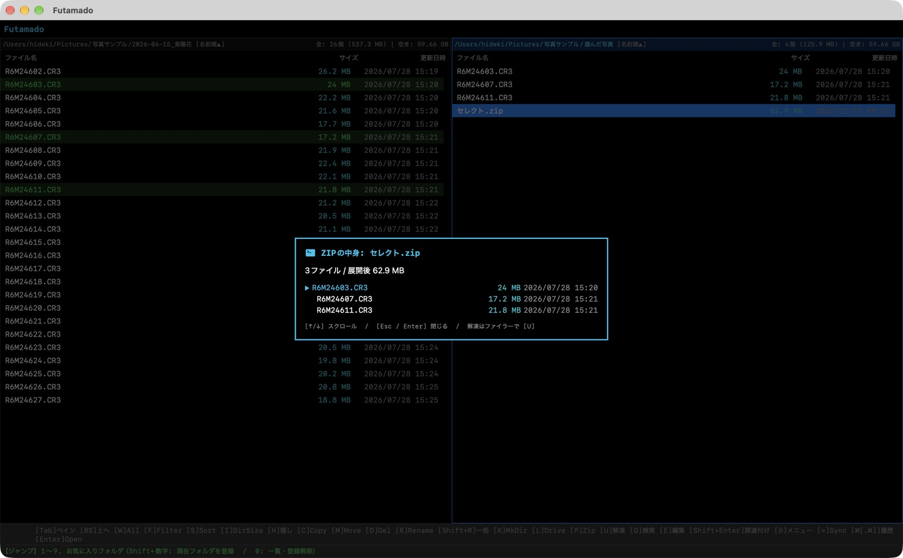
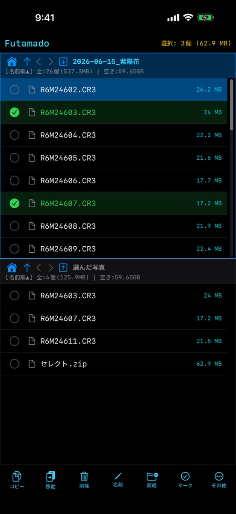
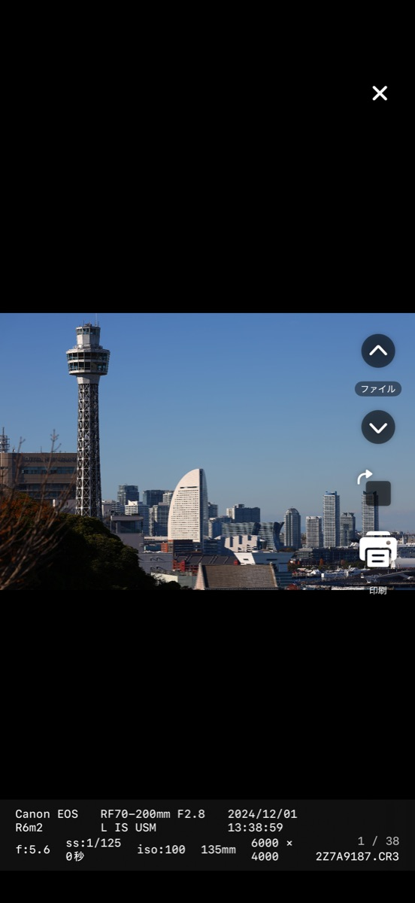
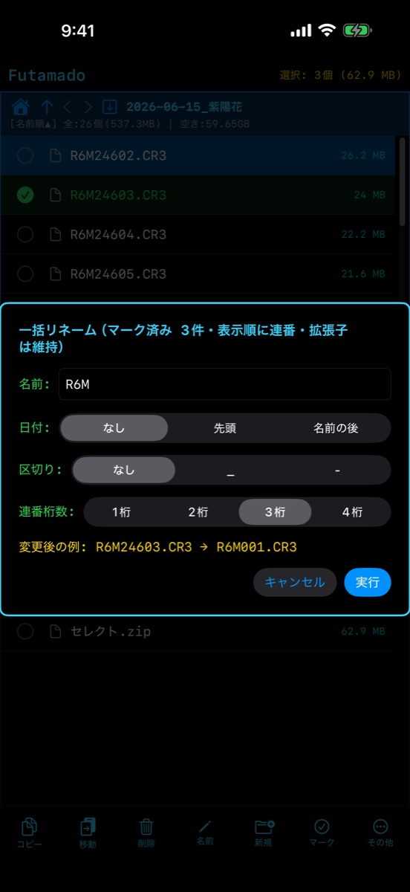
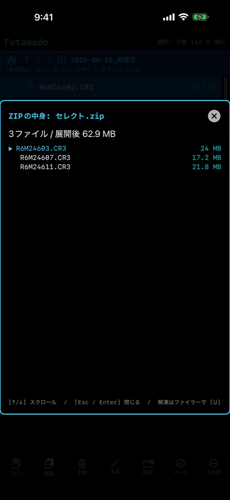

Futamado
フタマド
2つの窓で、キーボードだけで整理する。
写真を扱う人のための、2画面のファイルマネージャです。左右にフォルダを並べ、キーボードだけでコピー・移動・削除。画像の上で Enter を押せば、RAW もそのまま全画面で確認できます。
- Mac
- iPhone
- iPad
- 一度の購入で全部の端末に
- 日本語・英語
- 通信なし・データの収集なし

マウスに持ち替えずに、さばける
左で選んで、右へ送る。2画面のファイラーの基本を、キーボードだけで速く。見るのも、直すのも、アプリを切り替えずに済みます。
キーボードだけで完結
矢印で移動、Space でマーク、C でコピー、M で移動、D でゴミ箱へ。Tab で左右を切り替え、数字の 1〜9 で登録したフォルダへひと飛び。日本語入力のままでもキーが効きます。
左右に並べて、送るだけ
コピーや移動の行き先は、反対側のペインで開いているフォルダ。行き先を毎回選ぶ必要がありません。フォルダもまとめてマークして送れます。
RAW もすぐ開くビューワー
Enter で全画面のビューワーへ。主なメーカーの RAW を、現像を待たずに表示します。左右の矢印で次々に。カメラ・レンズ・F 値・シャッター速度・ISO などの撮影情報も下に出ます。
PDF・動画・音声・テキストも
PDF のページ送り、動画と音声の再生、テキストの表示をアプリの中で。写真・PDF・テキストはビューワーからそのまま印刷できます。
テキストはその場で編集
txt / md / csv などは内蔵のエディタで直して上書き。読み込んだ文字コード（UTF-8 / Shift-JIS）のまま保存するので、元のファイルを壊しません。
Windows でも文字化けしない ZIP
圧縮・解凍に対応し、解凍の前に中身を一覧で確かめられます。作った ZIP は、日本語の名前のまま Windows で開けます。
並べ替え・一括リネーム・検索
名前・拡張子・日付・サイズで並べ替え、第2の並びも指定。IMG_9 の次に IMG_10 が来る数の並びにも対応。連番・日付での一括リネーム、サブフォルダまで探す検索、隠しファイルの切り替えも。
iPhone・iPad でも同じようにiPhone・iPad
iPhone の縦画面では上下の2画面に。タッチだけで全部の機能を使え、外付けキーボードをつなげば Mac と同じキー操作ができます。iCloud Drive・本体・外付け SSD のフォルダに対応。
キー操作の一覧
Mac と、外付けキーボードをつないだ iPhone・iPad で使えます。キーボードが無くても、画面下のボタンと長押しメニューから同じことができます。
移動
| ↑ ↓ | カーソルを動かす（Shift と一緒に押すと画面の一番上・一番下へ、続けて押すと1画面ずつ） |
|---|---|
| ← → | ← で左のペインへ、→ で右のペインへ。そのペインにいるときにもう一度押すと親フォルダへ。iPhone の縦画面（上下の2画面）では、上の画面が「左」、下の画面が「右」です（→ で下へ、← で上へ） |
| Tab | 反対側のペインへ |
| BackSpace | 親フォルダへ |
| Enter | 開く（フォルダは中へ。画像・PDF・テキストはビューワーで） |
| 0 | お気に入りのフォルダの一覧 |
| 1〜9 | お気に入りのフォルダへジャンプ（Shift+数字で今のフォルダを登録） |
| ⌘ [ ⌘ ] | フォルダの履歴を戻る・進む |
| = | 反対側のペインを同じフォルダにそろえる |
| L | 場所（ドライブなど）を選ぶ |
選ぶ・ファイルの操作
| Space | マークして次の行へ（フォルダもマークできる） |
|---|---|
| W | ファイルを全部マーク／マークを反転 |
| C | 反対側のペインへコピー |
| M | 反対側のペインへ移動 |
| D | 削除（ゴミ箱へ） |
| R | 名前を変える |
| Shift R | 一括リネーム |
| K | 新しいフォルダ |
| E | テキストを内蔵のエディタで編集 |
| @ | カーソルの行の操作メニュー（↑↓で選んで Enter） |
表示・探す
| S | 並べ替えの指定画面 |
|---|---|
| F | 絞り込み |
| G | 検索（サブフォルダまで） |
| H | 隠しファイルの表示を切り替え |
| I | フォルダの容量を計算 |
ZIP
| P | ZIP に圧縮（反対側のペインへ書き出す） |
|---|---|
| U | 解凍（反対側のペインへ） |
ビューワー
| ← → | 前・次の画像（PDF はページ送り） |
|---|---|
| ↑ ↓ | 前・次のファイル |
| R | 回転 |
| Esc | 閉じる |
Mac だけ
| Shift Enter | Mac で関連付けられたアプリで開く（フォルダは Finder で） |
|---|
版によって変わることがあります。いま使っている版の一覧は、アプリの中でも見られます（Mac は画面の下、iPhone・iPad は「その他」→「キーボード操作の一覧」）。この一覧は 1.6 に合わせています。
画面
横にすべらせると、ほかの画面も見られます。
Mac



iPhone




はじめに（初めて起動したとき）
Futamado は Mac の保護の仕組み（サンドボックス）に対応しています。使うフォルダを、最初に一度だけ許可します。
Mac
- 初めて起動すると、フォルダへのアクセスの許可を求める画面が出ます。
- ホームフォルダが選ばれたまま「このフォルダを許可」を押します。デスクトップ・書類・ダウンロードなど、ホームの中のフォルダがすべて使えるようになります。
- 外付け SSD などは、初めて開くときに同じ画面が出ます。一度許可すれば、次からは出ません。
キー操作の一覧（アプリの中）
- Mac: 画面の下に常に出ています。
- iPad・iPhone: 画面右下の「その他」→「キーボード操作の一覧」で出せます。
- キーボードが無くても、画面下のボタンと長押しメニューから、すべての機能を使えます。
このページのキー操作の一覧にも載せています。
よくある質問
「アクセス権限がありません」と出て、フォルダが開けません
そのフォルダにまだアクセスの許可を出していない状態です。もう一度開こうとすると出るフォルダ選択の画面で、そのまま「このフォルダを許可」を押してください。上の階層（ホームフォルダやドライブ全体）を選んで許可すると、その中すべてが一度に使えるようになります。
外付け SSD の許可は毎回必要ですか？
いいえ。ドライブごとに、初めの1回だけです。許可はお使いの Mac の中に保存され、次に起動したときから自動で戻ります。
キー操作の一覧はどこで見られますか？
このページのキー操作の一覧と、アプリの中にあります。アプリの中では、Mac は画面の下に常に出ています。iPad・iPhone は画面右下の「その他」→「キーボード操作の一覧」で出せます。キーボードが無くても、画面下のボタンと長押しメニューから、すべての機能を使えます。
RAW の表示に対応していますか？
主なメーカーの RAW（Canon CR3/CR2、Sony ARW、Nikon NEF、FUJIFILM RAF、OM ORF、Panasonic RW2、PENTAX、Leica、DNG など）を表示できます。埋め込みのプレビューを使うので、現像を待たずに確認できます。jpg / heic / png / gif / tiff / bmp / webp にも対応しています。
動画や音声も再生できますか？
mp4 / mov / m4v の動画と、wav / mp3 / m4a などの音声を、内蔵のビューワーで再生できます。続けて再生する機能や、動画のコマを静止画として保存する機能もあります。
テキストファイルを編集できますか？
txt / md / csv / log / json などのテキストは、内蔵のエディタでそのまま編集できます（iPad・iPhone では長押しメニューの「編集」から開きます）。読み込んだときの文字コード（UTF-8 / Shift-JIS）のまま上書き保存します。
ZIP の解凍先はどこですか？
反対側のペインで開いているフォルダに展開します。圧縮したときも、反対側のペインへ書き出します。解凍する前に、ZIP の中身を一覧で確かめられます。
作った ZIP を Windows で開くと、名前が文字化けしませんか？
しません。濁点・半濁点を含む日本語の名前も Windows で正しく読める形で書き込み、Mac だけの隠しファイルは入れません。Windows で名前に使えない文字は置き換えるので、展開の途中で止まることもありません。
一括リネームの使い方は？
名前を変えたいファイルをマークしてから一括リネームを始めると、設定の画面が開きます。名前・日付の位置・区切り文字・連番の桁数を選ぶと、実行する前に変更後の名前の見本が出ます。
英語で使えますか？
使えます。Mac・iPhone・iPad の言語を英語にしていると、メニューや画面の文言が英語で表示されます。日本語の環境での表示は変わりません。